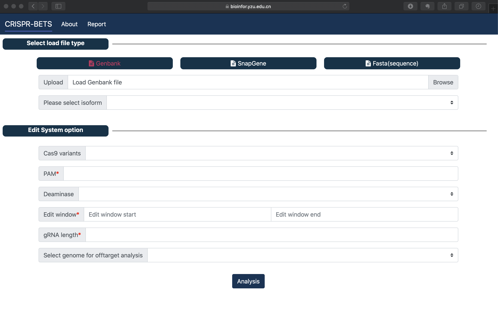
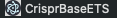
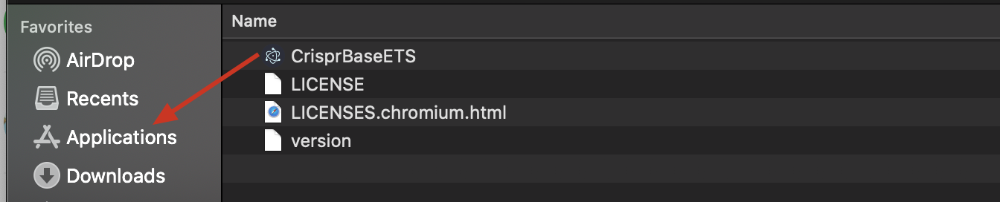
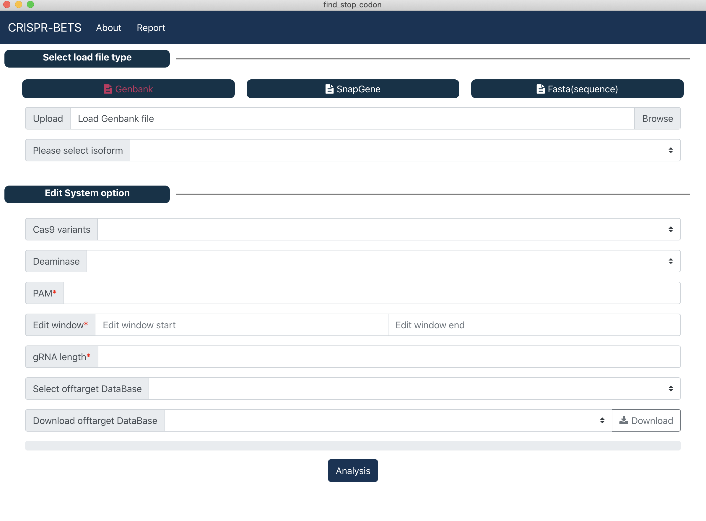

Download and Installation¶
CRISPR-BETS Web online version¶
Please visit http://bioinfor.yzu.edu.cn/crisprbets/

CRISPR-BETS Desktop version¶
Install via precompiled file(recommend)
1. Download CRISPR-BETS precompiled file
2. Installation
CRISPR-BETS Desktop version was written in javascript on the Electron framework, so there is no need to install other dependencies and complicated installation process, just unzip it!
1. Unzip the downloaded compressed file.
2. Enter the Unziped file directory.
Attention
Step 3 is different for different operating systems.
- 3. (under window) Find the CRISPR-BETS icon and double-click it.
- 
3 (under macOS) Find the CRISPR-BETS icon below drag it to Applications folder, Open the terminal and enter the following command.
sudo xattr -d com.apple.quarantine /Applications/CrisprBaseETS.app
- 3 (under Linux) Open the terminal and enter the following command.
4. Show main window, Done！
Install via source code
git clone https://github.com/zhangtaolab/CRISPR-BETS_desktop.git cd CRISPR-BETS_desktop npm install electron@11.2.0 -g npm install electron .